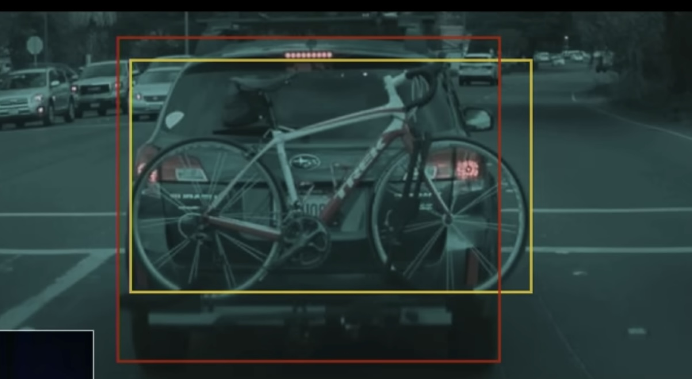

considering dark software factories
→
site for jared - changelog
→
v The physical Turing test
→
example - self driving - bike rack with bike on back of car
example - self driving - bike rack with bike on back of car
From
link not tracked
